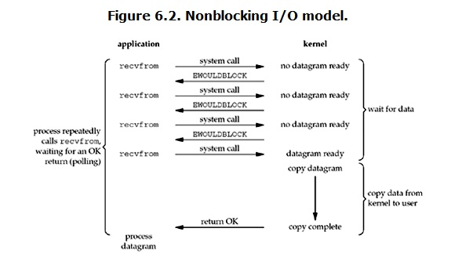

Java On Call 3
- Java基础知识
- 面向对象
- 常用API
- 集合I/O
- 多线程、网络编程、反射、设计模式
这是准备java面试的第二天，以上的分类的思维导图，来自->这里
- 这里是整理好的面试题，至少都过一遍:
集合IO
集合
- 集合是java中的一个大的框架，这个框架上有非常多的东西，首先集合可以分为：
- Collection集合，collection集合中又可以细分为
- List集合，list集合又可以细分为
- ArrayList
- Vector
- LinkedList
- Set集合，set集合又可以细分为
- HashSet
- TreeSet
- List集合，list集合又可以细分为
- Map集合, map集合又可以细分为
- HashMap
- TreeMap
- Hashtable
- 泛型
- Collection集合，collection集合中又可以细分为
泛型(Generic)
- 泛型指的是参数化类型，参数化类型指的就是，我们把数据的类型作为其参数的一种，加了泛型可以让我们避免出现运行时异常，并且强制要求了在集合中只能加入一种类型的数据
-
泛型类
//这就是一个简单的泛型类，当实例化这个类的时候，可以把我们要处理的数据类型，当作是一个参数给传入，具体的例子看下面 public class Sample<T>{ private T data; public void setData(T newData){}; public T getData(){}; }//end Sample<T>实例化泛型类
Sample<Integer> num2 = new Sample<>();，在泛型类定义的时候，是可以在<>里面加入多个类型的。或者说有的时候，希望限制那些被允许传递到一个类型参数的类型种类范围，那么就是使用bounding有界的类型参数。要声明一个有界的类型参数，首先列出类型参数的名称，后跟extends关键字，最后紧跟他的上届<T extends RootClass> //利用extend关键字声明上界，也就是说这个类型只可以是RootClass类及其子类的的 <T extends RootClass & Pizza> //利用extend关键字声明上界，也就是说这个类型只可以是RootClass类和Pizza类以及他们的子类的的 <T super Integer> //利用super关键字声明下界，表示参数化类型是此类型的超类型（父类型），直至Object，在这里就是 //Integer，Number，Object在限定类型的时候，不仅仅可以用T，还有别的标识符： - E: Element(在集合中使用，因为集合中存放的是元素) - T: Type，指的是java类 - K: Key - V: Value - N: Number - ?: 表示不确定的java类型（无限制通配符类型）
使用泛型的好处（once again）: Object是所有类的根类，任何类的对象都可以设置给该Object引用变量，使用的时候可能需要类型强制转换，但是使用了泛型标识符之后，类型在使用之前就已经确定了，不需要在进行类型强制转换
- 上界指的是使用了extends的bounding，例如
<? extends T>，表示参数化类型的可能是T或是T的子类 - 下界指的是使用了super的bounding，例如
<? super T>，这个学名叫做超类型限定，表示参数化类型的可能是此类型的超类型，直至Object
- 上界指的是使用了extends的bounding，例如
- 泛型方法
- 泛型方法既可以存在于泛型类中，也可以存在于普通类中。如果通过泛型方法就可以解决问题，那么应该尽量使用泛型方法
class DataHolder<T>{ T item; public void setData(T t) { this.item=t; } public T getData() { return this.item; } /** * 泛型方法 * @param e */ public <E> void PrinterInfo(E e) { System.out.println(e); } } //作者：dreamGong //链接：https://juejin.im/post/5b614848e51d45355d51f792 //来源：掘金 //著作权归作者所有。商业转载请联系作者获得授权，非商业转载请注明出处。上面这个就是在一个泛型类中定义了一个泛型方法PrinterInfo，注意在泛型方法中声明的类型参数跟他所处的泛型类的类型参数是独立的，也就是说，我实例化的时候，可以为这个泛型类实例化一个String类型的，但是我们在利用这个对象的泛型方法PrinterInfo的时候，是可以把它应用在Double类型的。
- 泛型接口
- 泛型接口就也是一个将类型参数化的接口，他的定义和泛型类的定义很相似
public interface Sample<T>{}; //一个未传入实参的泛型接口 public interface Sample<String>{}; //一个传入实参（String）的泛型接口而对于实现了这个接口的类，对于未传入实参和传入实参的泛型接口的处理也是不一样的
Class class1<T> implements Sample<T>{}; //当一个类实现一个未传入实参的泛型接口时，他自己也变成了泛型类 Class class2 implements Sample<String>{}; //当一个类实现一个传入实参的泛型接口时，他还是个普通的类Collection集合
- Collection集合包含两大体系：List和Set
List
- 存取有序，有索引，可以根据索引来取值，元素可以重复
- ArrayList
- 底层是使用数组实现的，所以查询速度快，增删速度慢
package //好好学java; import java.util.ArrayList; import java.util.Iterator; import java.util.List; public class Test { // 使用ArrayList进行添加和遍历 public static void main(String[] args) { List<String> list = new ArrayList<String>(); list.add("接口1"); list.add("接口2"); list.add("接口3"); // 第一种遍历方式,使用迭代器 Iterator<String> it = list.iterator(); while(it.hasNext()){ String next = it.next(); System.out.println(next); } System.out.println("-------------------"); // 第二种遍历方式，使用foreach for (String str : list){ System.err.println(str); } } } //作者：欧阳思海 //链接：https://juejin.im/post/5ad82dbef265da503825b240 //来源：掘金 //著作权归作者所有。商业转载请联系作者获得授权，非商业转载请注明出处。 - LinkedList
- 也就是链表啦，有头有尾一条线，是基于链表结构实现的，查询速度慢，增删速度快，提供了特殊的方法，对头尾的元素操作
- 以下这个例子是使用了linkedlist来实现栈（栈是先进后出（LIFO），而队列是先进先出（FIFO））
package com.xiaoshitou.classtest; import java.util.LinkedList; /** * 利用LinkedList来模拟栈 * 栈的特点：先进后出 * @author Beck * */ public class MyStack { private LinkedList<String> linkList = new LinkedList<String>(); // 压栈 public void push(String str){ linkList.addFirst(str); } // 出栈 public String pop(){ return linkList.removeFirst(); } // 查看 public String peek(){ return linkList.peek(); } // 判断是否为空 public boolean isEmpty(){ return linkList.isEmpty(); } } //作者：欧阳思海 //链接：https://juejin.im/post/5ad82dbef265da503825b240 //来源：掘金 //著作权归作者所有。商业转载请联系作者获得授权，非商业转载请注明出处。 - Vector
- Vector类实现了一个动态数组，和ArrayList很相似，但是两者是不同的
- Vector是同步访问的
- Vector包含了许多传统的方法，这些方法不属于集合框架
- Vector是线程安全的，ArrayList不是线程安全的
- ArrayList在底层数组不够用时在原来的基础上扩展0.5倍，Vector是扩展一倍
- 为什么说Vector是线程安全的呢？因为在Vector的源码里面，凡是比较关键的操作，都使用了
synchronized这个关键字，保证了线程的安全性，加了这个关键字的操作，每一次只可以被一个线程执行，而不可以并发执行
- Vector类实现了一个动态数组，和ArrayList很相似，但是两者是不同的
Set
- 存取无序，元素不可以重复, 无下标Set集合下面有：HashSet，LinkedHashSet，TreeSet
- HashSet
- 哈希集，每个加入哈希集的元素，都会先用hashcode来生成对这个元素的哈希值，然后根据计算得出的哈希值和数组的长度进行计算出存储的下标；如果下标的位置无元素，那么直接存储，如果有元素的话，使用equals来判断这个位置的这个元素和要存入的元素是不是一样的，如果结果为真，就不存了，因为已经有了，如果结果为假，那么就以链表的形式存在这个位置上
- HashSet的底层是通过HashMap来实现的，所以其实很多的原理看HashMap就好了，以下是HashSet的一个构造函数
private transient HashMap<E,Object> map; // Dummy value to associate with an Object in the backing Map private static final Object PRESENT = new Object(); /** * Constructs a new, empty set; the backing <tt>HashMap</tt> instance has * default initial capacity (16) and load factor (0.75). */ public HashSet() { map = new HashMap<>(); }以下是一个使用HashSet的例子
package 好好学java; import java.util.HashSet; import java.util.Iterator; import java.util.Set; public class Test { public static void main(String[] args) { // 利用HashSet来存取 Set<String> set = new HashSet<String>(); set.add("我的天"); set.add("我是重复的"); set.add("我是重复的"); set.add("welcome"); // 遍历 第一种方式 迭代器 Iterator<String> it = set.iterator(); while(it.hasNext()){ String str = it.next(); System.out.println(str); } System.out.println("--------------"); for (String str : set){ System.out.println(str); } // 打印结果，重复的已经去掉了 /*我的天 welcome 我是重复的 -------------- 我的天 welcome 我是重复的*/ } //作者：欧阳思海 //链接：https://juejin.im/post/5ad82dbef265da503825b240 //来源：掘金 //著作权归作者所有。商业转载请联系作者获得授权，非商业转载请注明出处。 - LinkedHashSet
- 是一个Set的实现，所以他其中存的不是键值对，而是值，这个东西是HashSet的子类，继承于HashSet，然后是基于LinkedHashMap来实现的
- 他的底层是基于链表和哈希表共同实现的，所以具有存取有序，元素唯一的特点，因为他是基于LinkedHashMap来实现的，所以他其实和LinkedHashMap的特点很像，他在底层是通过构造LinkedHashMap来实现的
- TreeSet
- TreeSet的特点是存取无序，元素唯一，可以进行排序（排序是在添加的时候），不过需要指定排序的算法
- TreeSet是基于二叉树的数据结构，二叉树的存储是：
- 如果是第一个元素，那么直接存入，作为根节点，下一个元素进来是会跟节点比较，如果大于节点放右边的，小于节点放左边；等于节点就不存储。后面的元素进来会依次比较，直到有位置存储为止
- TreeSet是如何保证元素的唯一性的？有两种方式
- 自定义对象实现Comparable接口，重写comparaTo方法，该方法返回0表示相等，小于0表示准备存入的元素比被比较的元素小，否则大于0
- 在创建TreeSet的时候向构造器中传入比较器Comparator接口实现类对象，实现Comparator接口重写compara方法。
Comparable, Comparator
- Comparable是在集合内部定义的方法实现排序，位于java.lang下，comparable接口仅仅包含一个函数就是compareTo，这个compareTo的方法是需要实现了comparable的类自己重写的。若x.compareTo(y) < 0，则x<y；以此类推等于和大于
- 自定义类要在加入list容器后能够排序，也可以实现comparable接口。所谓的自然排序指的就是实现comparable接口设定的排序方式
- Comparator是在集合外部实现的排序，Comparator包含两个函数
package java.util;
public interface Comparator<T> {
int compare(T o1, T o2);
boolean equals(Object obj)
}
- 以下的代码展示了使用comparable的实例：
package test;
import java.util.ArrayList;
import java.util.Collections;
import java.util.List;
public class test {
public static void main(String[] args) {
List<UserInfo> list = new ArrayList<UserInfo>();
list.add(new UserInfo(1,21,"name1"));
list.add(new UserInfo(2,27,"name1"));
list.add(new UserInfo(3,15,"name1"));
list.add(new UserInfo(5,24,"name1"));
list.add(new UserInfo(4,24,"name1"));
//对该类排序
Collections.sort(list);
for(int i=0;i<list.size();i++){
System.out.println(list.get(i));
}
}
}
class UserInfo implements Comparable<UserInfo>{
private int userid;
private int age;
private String name;
public UserInfo(int userid, int age, String name) {
this.userid = userid;
this.age = age;
this.name = name;
}
public int getUserid() {
return userid;
}
public void setUserid(int userid) {
this.userid = userid;
}
public int getAge() {
return age;
}
public void setAge(int age) {
this.age = age;
}
public String getName() {
return name;
}
public void setName(String name) {
this.name = name;
}
@Override
public String toString(){
return this.userid+","+this.age+","+this.name;
}
@Override
public int compareTo(UserInfo o) {
//如果年龄相同，则比较userid，也可以直接 return this.age-o.age;
if(this.age-o.age==0){
return this.userid-o.userid;
}else{
return this.age-o.age;
}
}
}
————————————————
版权声明：本文为CSDN博主「tolcf」的原创文章，遵循CC 4.0 BY-SA版权协议，转载请附上原文出处链接及本声明。
原文链接：https://blog.csdn.net/tolcf/article/details/52229068
- 如果我们需要控制某个类的次序，而该类本身不支持排序（该类没有实现Comparable接口）；那么，我们可以新建一个该类的比较器来进行排序。这个比较器只需要实现comparator就可以
- comparator体现了一种策略模式，不改变对象本身，而是用一个策略对象来改变他的行为，以下是一个使用comparator的例子
package test;
import java.util.ArrayList;
import java.util.Collections;
import java.util.Comparator;
import java.util.List;
public class test1 {
public static void main(String[] args) {
List<UserInfo> list = new ArrayList<UserInfo>();
list.add(new UserInfo(1,21,"name1"));
list.add(new UserInfo(2,27,"name2"));
list.add(new UserInfo(3,15,"name3"));
list.add(new UserInfo(5,24,"name4"));
list.add(new UserInfo(4,24,"name5"));
//new一个比较器
MyComparator comparator = new MyComparator();
//对list排序
Collections.sort(list,comparator);
for(int i=0;i<list.size();i++){
System.out.println(list.get(i));
}
}
}
class MyComparator implements Comparator<UserInfo>{
@Override
public int compare(UserInfo o1,UserInfo o2) {
if(o1.getAge()-o2.getAge()==0){
return o1.getUserid()-o2.getUserid();
}else{
return o1.getAge()-o2.getAge();
}
}
}
class UserInfo{
private int userid;
private int age;
private String name;
public UserInfo(int userid, int age, String name) {
this.userid = userid;
this.age = age;
this.name = name;
}
public int getUserid() {
return userid;
}
public void setUserid(int userid) {
this.userid = userid;
}
public int getAge() {
return age;
}
public void setAge(int age) {
this.age = age;
}
public String getName() {
return name;
}
public void setName(String name) {
this.name = name;
}
@Override
public String toString(){
return this.userid+","+this.age+","+this.name;
}
}
————————————————
版权声明：本文为CSDN博主「tolcf」的原创文章，遵循CC 4.0 BY-SA版权协议，转载请附上原文出处链接及本声明。
原文链接：https://blog.csdn.net/tolcf/article/details/52229068
- 可以看到上面的UserInfo是不可以进行自然排序的，因为他没有实现comparable，使用comparator来排序叫做比较器排序
Map集合
- Map是一个双列集合，其中保存的是键值对，键要求保持唯一性，值可以重复。键值是一一对应的，一个键只能对应一个值。
HashMap
- HashMap是一个实现了Map接口的基于哈希表的类
- Map接口：Map是java中的一个接口。他为数据（键值对）提供了一种映射，这个映射可以一对一地把键映射到值。在java中，有很多实现了Map接口，HashMap就是其中一个
- 哈希表：哈希表（Hash table）是根据键而直接访问在内存储位置的数据结构。在访问一个键值对时，我们通过键去找值，这时候可以利用hash function（哈希函数）去找到键对应的存储位置
hash(key);。然后访问对应的存储地址可以找到值。理论上来讲，用这种方式去访问数据，如果没有冲突的话，他的复杂度仅仅为O(1)。
- 其实在了解了哈希表之后，HashMap就没什么难的了，HashMap中既有map的键值对特点，也有哈希表的特点。当HashMap实例化的时候，一个数组会随之生成，当通过HashMap中的
public V put(K key, V value)的方法的时候，会先通过哈希函数找到这个键对应的数组中的位置，然后尝试把值放入这个位置中去- 为什么说是尝试呢？因为哈希表的有个很大的缺陷就是，有可能会把不同的键映射到同一个地方。如果这种情况出现的话，就会把这个值放入对应的位置的链表里面，没错，在这个数组里面，每个元素同时也是一个可以储存多个值的链表
那么当进行查找
public V get(K key)的时候，一样的先通过哈希函数得到位置，如果此位置只有一个元素的话直接取值，如果此位置有多个元素的话，需要遍历这个链表去查找。
- 为什么说是尝试呢？因为哈希表的有个很大的缺陷就是，有可能会把不同的键映射到同一个地方。如果这种情况出现的话，就会把这个值放入对应的位置的链表里面，没错，在这个数组里面，每个元素同时也是一个可以储存多个值的链表
那么当进行查找
- 简单地说，HashMap 在底层将 key-value 当成一个整体进行处理，这个整体就是一个 Entry 对象。HashMap 底层采用一个 Entry[] 数组来保存所有的 key-value 对，当需要存储一个 Entry 对象时，会根据 hash 算法来决定其在数组中的存储位置，在根据 equals 方法决定其在该数组位置上的链表中的存储位置；当需要取出一个Entry 时，也会根据 hash 算法找到其在数组中的存储位置，再根据 equals 方法从该位置上的链表中取出该Entry。
- 以下是一个HashMap的部分数据
public class HashMap<K,V> extends AbstractMap<K,V>
implements Map<K,V>, Cloneable, Serializable {
static final int DEFAULT_INITIAL_CAPACITY = 1 << 4;
static final int MAXIMUM_CAPACITY = 1 << 30;
static final float DEFAULT_LOAD_FACTOR = 0.75f; //默认负载因子0.75
static final int TREEIFY_THRESHOLD = 8; //当某条链表中元素的个数大于8时//将转变为红黑树
transient int size;
int threshold; //阈值，即当table中元素个数大于这个值就要resize()
final float loadFactor; //加载因子
有些数据就看一眼就能懂的，需要另外注意的是：
- **loadFactor(负载因子)**：负载因子声明了一个哈希表的装填程度。**负载因子的选择可以被认为是空间与时间上的一种折中**，这是因为当负载因子较高时，一个数组能够被填的越满，所以对整体来说，空间浪费会小（不管怎么样内存都已经把这部分的空间分配给了他），但同时查找速度因为值变多而降低；而当负载因子较小时，一个数组不会被填的太满，所以它整体上对空间的浪费较大，但是查找速度会因为值变少而加快。
- **TREEIFY_THRESHOLD**：为了保证效率，当一个链表中的元素的数量大于这个阈值的时候，这个链表就会被变成一个红黑树。 - **HashMap查找的Complexity**: 要分析这个complexity很简单，hash function是o(1)，找到对应的位置是o(1)，如果有链表的话原来是o(n)，但是因为现在限制了链表的长度，所以查找最慢的地方在于搜索红黑树，而这个需要花上o(logn)，所以HashMap查找的complexity就是**o(logn)** - **为什么HashMap会造成死锁**(<a href="https://blog.csdn.net/lantian0802/article/details/42487803">原文链接</a>)
- 为了了解造成死锁的原因，首先要知道的是，为了防止一个数组过载，HashMap会经常自己检查自己的size是否超出阈值，如果超过的话，需要进行resize操作，而当resize的时候，是很简单的新建一个更大尺寸的hash表并且把数据从旧表中直接转移到新表，当转移的时候，以下的事情会发生：
1. 对索引数组中的元素遍历
2. 对链表上的每一个节点遍历：用 next 取得要转移那个元素的下一个，将 e 转移到新 Hash 表的头部，因为可能有元素，所以先将 e.next 指向新 Hash 表的第一个元素（如果是第一次就是 null)，这时候新 Hash 的第一个元素是 e，但是 Hash 指向的却是 e 没转移时候的第一个，所以需要将 Hash 表的第一个元素指向 e
3. 循环2，直到链表节点全部转移
4. 循环1，直到所有索引数组全部转移
- 自己走一遍就不难发现，转移之后的链表和本来的链表顺序是相反的，而问题也出在这个地方。当多线程高并发的时候，当一个线程先完成对hash table的转移，那么链表有可能会形成环形链表，死锁就有可能会出现。
LinkedHashMap
- HashMap是无序的，HashMap在put的时候是根据键的哈希值找到对应的位置，所以如果遍历HashMap的话，会发现遍历出来的顺序跟放入的顺序是不一样的，所以java在jdk1.4以后提供了LinkedHashMap来实现有序的HashMap
- LinkedHashMap是HashMap的一个子类，它保留了插入的顺序，所以如果要输出的顺序和输入时相同的话，那么就选用LinkedHashMap
- LinkedHashMap 是 Map 接口的哈希表和链接列表实现，具有可预知的迭代顺序。此实现提供所有可选的映射操作，并允许使用 null 值和 null 键。此类不保证映射的顺序，特别是它不保证该顺序恒久不变。
- 那么这个东西是怎么实现的呢？LinkedHashMap的实现与HashMap的实现的不同之处在于，LinkedHashMap维护着一个运行于所有条目的双重链接列表。此链接列表定义了迭代顺序，该迭代顺序可以是插入顺序或者是访问顺序。注意，这个实现不是同步的。如果多个线程同时访问链接的哈希映射，而其中至少一个线程从结构上修改了该映射，那么他必须保持外部同步
- 根据链表中元素的顺序可以分为：按插入顺序的链表，和按访问顺序(调用 get 方法)的链表。默认是按插入顺序排序，如果指定按访问顺序排序，那么调用get方法后，会将这次访问的元素移至链表尾部，不断访问可以形成按访问顺序排序的链表。
TreeMap
- 这个东西和TreeSet很像。给TreeMap集合中保存自定义对象，自定义对象作为TreeMap集合的key值。由于TreeMap底层使用的二叉树，其中存放进去的所有数据都需要排序，要排序，就要求对象具备比较功能。对象所属的类需要实现Comparable接口。或者给TreeMap集合传递一个Comparator接口对象。
Hashtable
-
Hashtable是原始的java.util的一部分，是一个dictionary的具体实现。然而，java2重构的Hashtable实现了Map接口，因此Hashtable现在集成到了集合框架中。它和HashMap很类似，但是它支持同步。像HashMap一样，Hashtable在哈希表中存储键/值对。当使用一个哈希表，要指定用作键的对象，以及要链接到该键的值。然后，该键经过哈希处理，所得到的散列码被用作存储在该表中值的索引。
- Hashtable VS HashMap:
- Hashtable继承于陈旧的Dictionary类，HashMap继承于Map接口
- 线程安全不一样，Hashtable中的方法都是线程安全的，都加入了synchronized的关键字；但是HashMap中的方法在默认情况下是非同步的。在多线程并发的情况下，Hashtable是可以直接用的，但HashMap的话要自己增加同步处理
- Hashtable中，键值都不允许出现null；HashMap中，null可以作为键
- HashTable直接使用对象的hashCode。而HashMap重新计算hash值。
- HashTable中的hash数组初始大小是11，增加的方式是 old*2+1。HashMap中hash数组的默认大小是16，而且一定是2的指数。
- HashSet VS HashMap:
- HashSet实现的是Set接口，HashMap实现的是Map接口
- HashSet存储值，HashMap存储键值对
- HashMap使用键对象来计算hash code，HashSet使用成员对象来计算
- HashMap比较快
- 因为HashSet是基于HashMap来实现的，所以HashSet也是线程不安全的
- Collection VS Collections: 这个区别就很简单，Collection是一个接口，是set和list的父类；而Collections是个一个工具类，提供了一系列的静态方法来辅助容器操作，这些方法包括对容器的搜索、排序、线程安全化等等。
IO
- Java IO是一套java用来读写数据的API。大部分程序都要处理一些输入，并有输入产生一些输出。为此，java提供了java.io包
- 一个流可以理解成一个数据的序列。输入流表示从一个源读取数据，输出流表示向一个目标写数据
Java IO模型
- 关于Bio，我们需要知道什么是同步阻塞IO模型，Bio操作的对象：流，以及如何使用Bio进行网络编程，使用Bio进行网络编程的问题
- 关于Nio，我们需要知道什么是同步非阻塞IO模型，什么是多路复用Io模型，以及Nio中的Buffer,Channel,Selector的概念，以及如何使用Nio进行网络编程
- 关于Aio，我们需要知道什么是异步非阻塞IO模型，Aio可以使用几种方式实现异步操作，以及如何使用Aio进行网络编程
Blocking, Nonblocking, Asychronous
- 同步阻塞Blocking根据karim的说法，在通信机制上面，blocking阻塞指的是Sender process is blocked while the message that it has sent has not been received，Receiver process is blocked till it receives a message。所以关于阻塞IO，最大的特点是IO执行的两个阶段都被block了。当用户进程调用了recvfrom这个系统调用，kernel就开始了IO的第一个阶段：准备数据。对于network io来说，很多时候数据在一开始还没有到达（比如，还没有收到一个完整的UDP包），这个时候kernel就要等待足够的数据到来。而在用户进程这边，整个进程会被阻塞。当kernel一直等到数据准备好了，它就会将数据从kernel中拷贝到用户内存，然后kernel返回结果，用户进程才解除block的状态，重新运行起来。

- 同步非阻塞Nonblocking非阻塞指的是Sender process continue executing while the message has been send，Receiver process receives a valid message or null。从图中可以看出，当用户进程发出read操作时，如果kernel中的数据还没有准备好，那么它并不会block用户进程，而是立刻返回一个error。从用户进程角度讲 ，它发起一个read操作后，并不需要等待，而是马上就得到了一个结果。用户进程判断结果是一个error时，它就知道数据还没有准备好，于是它可以再次发送read操作。一旦kernel中的数据准备好了，并且又再次收到了用户进程的system call，那么它马上就将数据拷贝到了用户内存，然后返回。所以，用户进程其实是需要不断的主动询问kernel数据好了没有。

- 异步非阻塞Asychronous IO: 用户进程发起read操作之后，立刻就可以开始去做其它的事。而另一方面，从kernel的角度，当它受到一个asynchronous read之后，首先它会立刻返回，所以不会对用户进程产生任何block。然后，kernel会等待数据准备完成，然后将数据拷贝到用户内存，当这一切都完成之后，kernel会给用户进程发送一个signal，告诉它read操作完成了。

- 阻塞和非阻塞的关系还是很清晰的：调用blocking IO会一直block住对应的进程直到操作完成，而non-blocking IO在kernel还准备数据的情况下会立刻返回。
- 同步和异步有点点难懂，先给一个官方解释：
- A synchronous I/O operation causes the requesting process to be blocked until that I/O operation completes;
- An asynchronous I/O operation does not cause the requesting process to be blocked; 两者的区别就在于synchronous IO做”IO operation”的时候会将process阻塞。按照这个定义，之前所述的blocking IO，non-blocking IO，IO multiplexing都属于synchronous IO。有人可能会说，non-blocking IO并没有被block啊。这里有个非常“狡猾”的地方，定义中所指的”IO operation”是指真实的IO操作，就是例子中的recvfrom这个system call。non-blocking IO在执行recvfrom这个system call的时候，如果kernel的数据没有准备好，这时候不会block进程。但是，当kernel中数据准备好的时候，recvfrom会将数据从kernel拷贝到用户内存中，这个时候进程是被block了，在这段时间内，进程是被block的。而asynchronous IO则不一样，当进程发起IO 操作之后，就直接返回再也不理睬了，直到kernel发送一个信号，告诉进程说IO完成。在这整个过程中，进程完全没有被block。